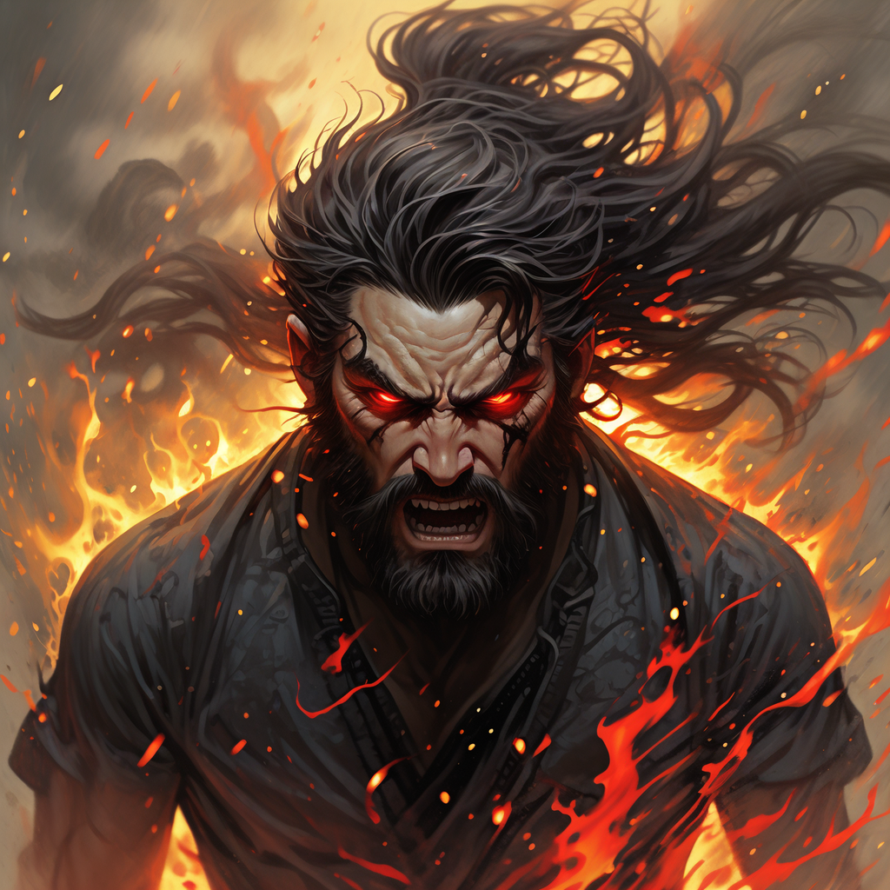

成语“怒发冲冠”出自《南唐书·李昪传》，原文为“怒发上冲冠，凭栏处，潇潇雨歇”。
在这里，意思是因为愤怒而头发直立，几乎要顶起帽子，形容愤怒的程度极为强烈。
生成的文生图

图示：因为愤怒而头发直立
成语“怒发冲冠”出自《南唐书·李昪传》，原文为“怒发上冲冠，凭栏处，潇潇雨歇”。
在这里，意思是因为愤怒而头发直立，几乎要顶起帽子，形容愤怒的程度极为强烈。
理解成语含义：首先，分析成语的含义：“怒发冲冠”意思是愤怒到极点，甚至头发都竖起来，仿佛要冲破帽子，表达了愤怒的情绪已经无法控制。
构建场景：根据成语内容，从画面感的角度来描绘，可以想象：一个人因为遭遇到无法容忍的侮辱或暴行，愤怒的情绪像烈火一样在胸中燃烧。他的脸色通红，眼中充满了火焰，头发像被风吹起的怒涛般竖立起来，仿佛每一根发丝都在宣泄着内心的愤慨和不平。此刻，他的情绪已经超越了常人的控制，愤怒的波涛汹涌澎湃，仿佛整个世界都在他的怒火中燃烧。
图像生成：使用文本到图像生成工具Liblib，将构思转化为实际图像。根据图像生成工具的操作步骤，输入与成语相关的提示（如“Angry person, flushed face, eyes burning with fury, hair standing up, body tense, clenched fists, expression of rage, intense emotion, charged atmosphere, wind blowing, storm in the background, power, chaos, overwhelming anger.”），生成图像后插入网页。